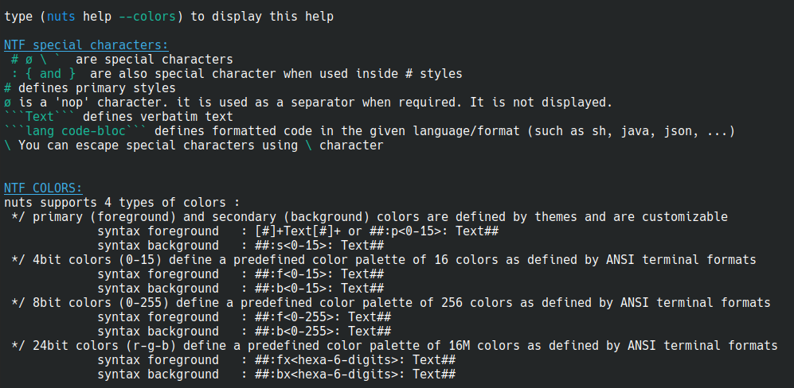

1 Nuts Library
Dual Role by Design
At its core, Nuts plays two essential roles:- As a package manager, Nuts handles runtime dependency resolution, dynamic execution of artifacts, and integration with Maven-compatible repositories.
- As a framework, Nuts offers a rich set of APIs to handle I/O, configuration, text formatting, command execution, file systems, compressed archives, and more — helping developers write cleaner, more powerful, and portable applications.
Build, Embed, Automate
Nuts is designed to work in multiple modes of operation:- Run Java programs and tools directly from repositories without downloading or installing them manually.
- Integrate it as a library to give your own application full access to the Nuts runtime capabilities.
- Use it as a DevOps engine to build repeatable scripts, installers, or deployment workflows.
- Use Nuts as a command-line tool to install, run, or deploy applications.
- Build your own ecosystem of versioned components, launchers, and tools powered by Nuts' modular runtime.
Whether you are:
- Building CLI tools that need versioned plugins and extensible command handling,
- Developing DevOps utilities with integrated workspace/session management,
- Creating modular applications that dynamically load artifacts at runtime,
- Writing cross-environment installers, launchers, or monitoring tools,
- Or designing educational platforms, scripting DSLs, or JVM-based OS abstractions,
- Compatible with Maven repositories and standards
- Supports local, remote, and custom repositories
- Enables runtime dependency resolution and dynamic artifact loading
- Isolated and shared workspace models with full lifecycle control
- Sessions encapsulate runtime configuration, user preferences, I/O handling, logging, and output styles
- Built-in support for dry-run, trace, confirmation, GUI/headless modes
- Supports semantic console output (NTF format) with colors, styles, and structured messages
- Unified API for stdout/stderr, input, logging, formatting, and piping
- Handles both human-friendly and machine-readable outputs (e.g., JSON, XML, Props, Tree)
- Provides advanced file abstraction via NPath
- Built-in support for streaming, compressing, uncompressing, digesting, and manipulating file trees
- Unified access to HTTP, classpath, resources, and virtual filesystems
- Supports modular extension points: listeners, commands, install hooks, and repositories
- Embedded scripting with support for Java source snippets and other languages
- Can be integrated into Spring, JavaFX, Swing, or any plain Java project
- Features like NRun, NExec, NShell, and NOps make it ideal for automation
- Cross-platform support: Linux, macOS, Windows
- Zero external runtime dependencies — deploy as a bare JAR, with automatic resolution on first use
Why Use Nuts?
Unlike traditional libraries or shell utilities, Nuts brings together the flexibility of a modern scripting environment, the structure of a dependency-aware runtime, and the developer convenience of a polished CLI framework — all in one embeddable package. You can think of it as your:- Maven-like package manager, but runtime aware
- Command-line framework, but fully pluggable
- Launcher platform, but without installation or configuration hurdles
- Shell scripting toolkit, but type-safe and Java-native
With Nuts, the boundary between development and runtime fades away, letting you write, deploy, and evolve tools without sacrificing portability, maintainability, or developer experience.
Lightweight, Modular, and Composable
- Modular architecture built around workspaces, sessions, and execution contexts.
- Supports multi-repository, multi-version, and multi-runtime setups.
- Helps maintain separation between application logic and environment/runtime logic — a key feature for scripting, testing, and dynamic execution.
Not Just Tools — Ecosystems
Nuts encourages composability: it enables you to define reusable, versioned components that can evolve independently and work across environments. It brings a new level of reusability to the Java ecosystem, bridging the gap between packaged applications, scripts, and shared libraries. Whether you're building a command-line tool, a plugin system, a runtime launcher, or a portable enterprise toolkit — Nuts gives you a structured, scalable, and developer-friendly platform to do it all.1.1 Maven Dependency
to make use of nuts library you need add the dependency .thevpc.nuts#nuts-lib: and provide a hint to maven to point to the right repository https://maven.thevpc.net
Configure your pom.xml
<dependencies>
<dependency><groupId>net.thevpc.nuts</groupId><artifactId>nuts</artifactId><version>0.8.6</version></dependency>
</dependencies>
<repositories>
<repository><id>thevpc</id><url>https://maven.thevpc.net</url></repository>
</repositories>
1.2 Spring Boot Integration
<dependency>
<groupId>net.thevpc.nuts</groupId>
<artifactId>nuts-spring-boot</artifactId>
<version>0.8.6.0</version>
</dependency>
Add @NApp.Definition in your SpringBootApplication top class.
@NApp.Definition
@SpringBootApplication
@Import(NutsSpringBootConfig.class)
public class AppExample {
public static void main(String[] args) {
SpringApplication.run(AppExample.class, args);
}
@NApp.Runner // not mandatory
public void run() {
NOut.println("Hello ##World##");
}
}
@Component
public class MyBean {
@Autowired NSession session;
@Autowired NWorkspace workspace;
@Autowired NElements elems;
@Autowired NIO nio;
@Autowired NScheduler scheduler;
@Autowired NTerminal term;
@Autowired NPrintStream out;
}
2 Input Output System
NIn: Simplifies and unifies input handling, supporting both interactive and programmatic input sources.
NOut: The standard output stream abstraction supporting colorful, structured, and formatted output that respects the current session context and output format (plain text, JSON, XML, tables, etc).
NErr: Dedicated error output stream, separate from standard output, ensuring proper logging and error visibility.
NTrace: Specialized output stream for trace/debug information that is only displayed when trace mode is enabled, helping users debug without cluttering normal output.
NLog: A logging interface integrating with Nuts' session and workspace model to produce contextual logs with flexible verbosity and output controls.
NMsg: A message abstraction enabling rich, multi-language, and parameterized messages with support for localization and structured formatting.
NTF: Nuts Text Format — a powerful formatting system that extends standard text output with features like color, styles, and structured data rendering, allowing consistent and attractive CLI outputs.
- Colorful and readable console output.
- Structured output formats automatically adapting to context.
- Clear separation of standard, error, and debug outputs.
- Localizable and parameterized messages.
- Simplified user input handling.
2.1 Nuts Text Format
Nuts Text Format (NTF)
The Nuts Text Format (NTF) is a lightweight, expressive markup language designed specifically to enhance command-line interface (CLI) output with rich, portable, and visually appealing formatting. It provides a powerful yet simple syntax that lets developers create colorful, structured, and semantically meaningful text that works seamlessly across different terminal environments and beyond.
The Need for NTF
Traditional terminal output often relies on plain text or embedded ANSI escape codes to achieve colors and styles. This approach has several drawbacks:Lack of readability: Raw escape sequences are hard to read and maintain within source code.
Poor portability: Different terminals support different levels of ANSI or control codes, leading to inconsistent rendering.
Limited structure: Plain text and raw ANSI codes do not express document structure well (like lists, tables, sections).
HTML is rich and flexible but too verbose and requires an HTML viewer, unsuitable for terminals.
Markdown is easy to write and readable but lacks support for dynamic styling and rich terminal features.
Man pages (troff/groff) provide basic terminal help formatting but are complex to author and limited in styling options.
What Makes NTF Unique?
NTF is crafted to fill this gap by being a terminal-first markup format that is both human-readable and machine-processable, with several key advantages:
Readable markup: NTF syntax uses simple inline markers for colors, font styles, lists, tables, and sections, which are easy to write and understand.
Rich formatting: Supports foreground and background colors, bold/italic/underline, code blocks, bullet and numbered lists, tables, links, and other structured elements.
Portability: NTF content is independent of the terminal's escape code specifics. Instead, it is parsed and translated to the appropriate ANSI sequences or other target formats at runtime.
Multi-target rendering: Beyond ANSI terminals, NTF can be converted to Markdown (for documentation or developer notes) and HTML (for web-based manuals), ensuring a unified authoring experience.
Context-awareness: NTF rendering adapts automatically to the capabilities of the target output device or session configuration, allowing graceful degradation when color or style is not supported.
Easy toggling: Users can enable or disable colored output through standard Nuts options or programmatically, without affecting the underlying markup.
NTF in Nuts Ecosystem
Within the Nuts toolbox, NTF plays a central role in delivering a consistent, high-quality user experience:
Command-line help system: All command help, options, examples, and warnings in Nuts are authored in NTF. This allows help to be:
Colorful and well-structured on capable terminals.
Plain-text friendly when color is disabled.
Automatically exportable to Markdown or HTML for documentation portals.
Output formatting: When printing messages, lists, objects, or errors, Nuts can utilize NTF to add semantic structure and emphasis, improving clarity and user comprehension.
Unified authoring: Developers write output messages once in NTF and can be confident it will render correctly across all supported environments without manual adjustments.
How NTF compares to other formats:
NTF is specifically designed for developer-friendly, portable, terminal-first output formatting. It bridges the gap between simple text styling (like ANSI escape codes) and more advanced document-oriented formats (like Markdown or AsciiDoctor), making it uniquely suited for CLI applications.
The table below highlights how NTF compares to other common formats across key capabilities:| Feature | NTF |
ANSI Escape Codes |
Markdown |
AsciiDoctor |
HTML |
|---|---|---|---|---|---|
Colored output |
✅ Named colors, indexed and hex support | ✅ Manual, code-based | ❌ (Extensions needed) | ✅ With roles/styles | ✅ CSS/inline styles |
Styled text |
✅ Bold, italic, underline, strikethrough | ✅ Limited (manual control) | ✅ Bold, italic | ✅ Bold, italic, underline | ✅ Full style control |
Semantic color tags (e.g. error, warning) |
✅ Built-in mappings ( |
❌ None | ❌ None | ⚠️ Manual via roles | ✅ Possible via class |
Nested/Combined styles |
✅ Fully supported (e.g. |
❌ Complex / fragile | ❌ Not supported | ✅ Supported | ✅ Fully supported |
Structured sections (titles, subtitles) |
✅ NTF supports semantic headers ( |
❌ None | ✅ Basic headings | ✅ Full document structure | ✅ Rich document structure |
Lists (bullet, numbered) |
❌ Not yet | ❌ None | ✅ Yes | ✅ Yes | ✅ Yes |
Tables |
❌ Not yet | ❌ None | ✅ Basic tables | ✅ Rich tables | ✅ Rich tables |
Syntax highlighting (code snippets) |
✅ With language tag | ❌ None | ✅ (Limited, via extensions) | ✅ With language tag | ✅ Full, with JS/CSS |
Terminal rendering support |
✅ Auto-adapts (ANSI, plain, HTML, Markdown) | ✅ Terminal only | ❌ Not terminal-targeted | ❌ Not terminal-targeted | ❌ Not terminal-targeted |
Portability across environments |
✅ Designed for CLI and convertible to HTML/Markdown | ❌ Terminal only | ✅ Editor/docs only | ✅ Editor/docs only | ✅ Web/browser only |
Ease of authoring for CLI output |
✅ Very high (compact, readable, intuitive) | ❌ Low (escape-heavy) | ⚠️ Limited styling | ⚠️ Verbose | ❌ Too verbose for CLI |
Summary
The Nuts Text Format is a modern, terminal-optimized markup language that:
- Improves readability and maintainability of CLI output markup.
- Enables richly formatted, colorful, and structured terminal output.
- Supports conversion to Markdown and HTML for seamless documentation.
- Enhances the Nuts ecosystem by unifying CLI and documentation presentation.
nuts comes up with a simple coloring syntax that helps writing better looking portable command line programs. standard output is automatically configured to accept the "Nuts Text Format" (NTF) syntax. Though it remains possible to disable this ability using the --!color standard option (or programmatically, see nuts API documentation). NTF will be translated to the underlying terminal implementation using ANSI escape code on linux/windows terminals if available.
Here after a showcase of available NTF syntax.


Nuts Text Format Specification
<TOKEN> S10: '##########'
<TOKEN> S9 : '#########'
<TOKEN> S8 : '########'
<TOKEN> S7 : '#######'
<TOKEN> S6 : '######'
<TOKEN> S5 : '#####'
<TOKEN> S4 : '####'
<TOKEN> S3 : '###'
<TOKEN> S2 : '##'
<TOKEN> S1 : '##'
<TOKEN> A3 : '\```'
<RULE> S2 ':' KEY ':' ANYTHING S2
<RULE> S2 '{:' WORD ANYTHING S2
<RULE> 13 ANYTHING A3
2.2 NOut Standard output
The NOut class is a simple and powerful utility for writing to the standard output in Nuts. It provides a consistent and extensible way to print text, formatted messages, and structured data.
By default, NOut delegates to the session's configured output stream, defined as an NPrintStream in the current NSession. This stream is customizable, structured, and NTF-aware, making it suitable for both human-readable and machine-readable outputs (JSON, XML, etc.).
Unlike System.out, NOut provides enhanced capabilities:
Intelligent rendering of objects (beyond basic
toString()),Colorized and formatted output via NTF (Nuts Text Format),
- Support for various structured formats (e.g., JSON, YAML, XML, TSON),
- Support for formatted messages with placeholders,
- Table and tree rendering.
Basic Usage
The simplest way to print a message to the console:
Nuts.require();
NOut.println("Hello");
Using NTF
NTF enables you to add rich formatting and colorization:
NOut.println("##Hello colored## ##:_:Hello underlined## ");
NOut.println("##:yellow:Hello in yellow##");
NOut.println("##:warn:this is a warning##");
NOut.println("##:fxFF0000:this is a red message##");
Rendering structured output
NOut can render structured output based on the active format in the NSession.
class Customer{String id;String name;}
Customer customer1,customer2,customer3; ...
// configure le current output to render objects as json
// to display the curstomer list as a json array
NSession.of().json();
NOut.println(Arrays.asList(customer1,customer2,customer3));
// you can do the same for yaml,tson,xml,table and tree (as formats)
NSession.of().tree();
NOut.println(Arrays.asList(customer1,customer2,customer3));
Formatted Messages
You can build formatted messages using NMsg, with placeholder support and type-aware formatting:
NOut.println(NMsg.of("this is a %s message that is %s %% beautiful",true,100));
NOut.println(NMsg.of("this is a %s ",NMsg.ofStyledPrimary1("message")));
Working with Tables
To have full control over tabular output, use NMutableTableModel:
NSession session=...;
Object a,b,c,d; ...
NMutableTableModel m = NTableModel.of();
m.newRow().addCells(a,b,c,d);
NOut.println(m);
Working with Trees
To render hierarchical structures, you can implement a custom NTreeModel:
NOut.println(
new NTreeModel() {
@Override
public Object getRoot () {
return "/";
}
@Override
public List<NDependencyTreeNodeAndFormat> getChildren (Object node){
if ("/".equals(node)) {
return Arrays.asList(1,2,3);
}
return Arrays.asList();
}
}
);
Summary
The NOut class provides a robust and extensible mechanism for console output in the Nuts ecosystem. Whether you're logging simple messages, displaying structured data, or building CLI tools, NOut ensures consistent and powerful rendering—fully aligned with Nuts' NTF and output formatting infrastructure.
2.3 NErr Standard Error
NErr is the error-stream counterpart to NOut, providing structured, colored, and format-aware error output in the Nuts ecosystem.
It writes to the standard error stream configured in the current NSession, represented by a customizable NPrintStream. Like NOut, this stream is fully NTF-aware and supports a wide range of formats such as JSON, YAML, TSON, XML, tree, and table.
Key Features
Delegates to
NSession.err()(an NPrintStream)Fully supports NTF (Nuts Text Format) for colored and styled messages
- Supports structured output in multiple formats
Works seamlessly with NMsg, NMutableTableModel, and NTreeModel
- Ideal for logging warnings, errors, diagnostics, and debugging information
Basic Example
Nuts.require();
NErr.println("An error occurred");
Styled Error Messages
You can leverage NTF for expressive and styled output:
NErr.println("##:error:Something went wrong!##");
NErr.println("##:warn:Warning:## Potential issue detected");
NErr.println("##:fxFF0000:Critical failure##");
Structured Error Reporting
Just like with NOut, you can render structured error data using the current session format:
NSession.of().json();
NErr.println(errorList); // errorList = List<ErrorDetail>
NSession.of().table();
NErr.println(errorList);
Formatted Diagnostic Messages
Use NMsg to build dynamic, strongly typed error messages:
NErr.println(NMsg.of("Task %s failed after %d attempts", "SyncJob", 3));
Use Cases
- Displaying runtime errors or exceptions in a user-friendly way
- Emitting machine-readable diagnostics for automation tools
- Rendering hierarchical error trees or tabular summaries
- Debugging output during CLI tool development
Summary
NErr brings all the expressive power of NOut to the standard error stream. Whether you're showing simple warnings or structured diagnostic trees, NErr ensures your error messages are readable, styled, and format-compliant with the Nuts session configuration.
2.4 NTrace, the output companion
NTrace — Conditional Trace Output Utility
NTrace is a structured output utility in Nuts used to emit optional diagnostic or trace information to the standard output stream. It behaves like NOut, but only prints output when tracing is explicitly enabled in the current session.
🔍 When to Use NTrace
Use NTrace to provide optional messages that :
- Help during development or debugging,
- Provide insights into internal steps,
- Are not critical and should not mix with standard output (NOut) or error messages (NErr).
Unlike NOut, NTrace output is optional and controlled by the trace flag, so it won’t clutter output if tracing is turned off.
Output Destination
> Note: > NTrace writes to NSession.out() — the same output stream used by NOut. > In contrast, NErr writes to NSession.err().
Trace Mode Behavior
Trace is enabled by default. To disable trace output, users can:- Pass --trace=false or --!trace on the command line:
nuts --trace=false my-app
nuts --!trace my-app
- Programmatically disable it in the session:
NSession.of().setTrace(false);
Example Usage
Nuts.require();
// This will print only if trace is enabled (default is true)
NTrace.println("Loading configuration from default path...");
Features (Same as NOut)
NTrace supports the complete feature set of NOut, including:
- NTF formatting for colors and styling,
- Structured rendering (e.g., JSON, YAML, XML, TSON, table, tree),
- Formatted messages using NMsg,
- Integration with the current session’s output configuration.
Best Practices
Use NTrace to display less relevant or verbose messages that:- Are helpful for end users who want to better understand what the tool is doing,
- Should not appear during normal usage but may provide useful context when verbosity is desired (e.g., progress steps, skipped actions, fallback behavior),
- Can be safely ignored without impacting the understanding of the main output.
> Note: > NTrace is not a developer logging mechanism. > For internal developer-oriented logging, use NLog.
2.5 NMsg for Messages and text formatting
The NMsg class is a powerful utility for building structured, formatted, and styled messages in Nuts. Messages constructed using NMsg can be safely rendered in various output formats (e.g., plain text, NTF, JSON, etc.) and support placeholders, syntax coloring, and semantic styling.
NMsg is fully integrated with NOut and NErr for displaying rich and meaningful CLI output.
Basic Message Construction
C-style Formatting (ofC)
Use ofC to create messages using standard String.format()-style syntax:
NOut.println(NMsg.ofC("Hello %s", "world"));
Placeholders like %s, %d, etc., behave as expected. Useful for simple messages with positional arguments.
Java MessageFormat (ofJ)
Use ofJ for Java-style formatting with {0}, {1} placeholders:
NOut.println(NMsg.ofJ("Hello {0}", "world"));
NOut.println(NMsg.ofJ("Hello {}", "world")); // SLF4J-style
{}placeholders are matched sequentially, like in SLF4J.{0},{1}, etc. allow for specific argument reordering or reuse.
Variable-based Formatting (ofV)
Use ofV to format messages using named variables:
NOut.println(NMsg.ofV("Hello $v", NMaps.of("v", "world")));
NOut.println(NMsg.ofV("Hello ${v}", NMaps.of("v", "world")));
Both $v and ${v} syntaxes are supported.
- $v is simple and concise.
${v} is safer when followed by alphanumeric characters (e.g.,
$val123textvs${val}123text).
Styling Output
In addition to content, NMsg supports visual styling, including colors and font modes.Style by Color Index (Predefined Color Schemes)
Use built-in style presets based on Nuts theme indexes:
NOut.println(NMsg.ofC("Hello %s", NMsg.ofStyledPrimary1("world")));
NOut.println(NMsg.ofC("Hello %s", NMsg.ofStyledSecondary5("world")));
Style by Foreground Color
You can apply arbitrary Java Color objects:
NOut.println(NMsg.ofC("Hello %s", NMsg.ofStyledForegroundColor("world", Color.RED)));
Style by Mode (Blink, Bold, etc.)
Use text styles for visual emphasis:
NOut.println(NMsg.ofC("Hello %s", NMsg.ofStyledBlink("world", Color.RED)));
NOut.println(NMsg.ofC("Hello %s", NMsg.ofStyledBold("world")));
NOut.println(NMsg.ofC("Hello %s", NMsg.ofStyledStriked("world")));
Style by Semantic Token Type
NMsg also supports semantic styling, commonly used in syntax highlighting:
NOut.println(NMsg.ofC("Hello %s", NMsg.ofStyledComments("world")));
NOut.println(NMsg.ofC("Hello %s", NMsg.ofStyledWarn("world")));
ofStyledComments: renders like source code comments.
ofStyledWarn: renders with a warning color/style.
ofStyledString(...)ofStyledKeyword(...)ofStyledBoolean(...)ofStyledError(...)
Summary
The NMsg class allows you to:
- Format messages using multiple conventions (C-style, Java-style, named variables),
- Style message fragments with semantic types or custom colors,
Seamlessly integrate with NOut, NErr, NPrintStream,... for rich CLI or structured outputs.
Whether you're building user-facing tools or internal diagnostics, NMsg ensures your messages are clear, consistent, and visually expressive.
2.6 NIn for simplified Input
NIn — Structured Input Utility
The NIn class is the interactive input utility of the Nuts platform. It provides a simple and consistent interface to read from the standard input stream (NSession::in()), with built-in support for prompts, password masking, and type-safe values.
Basic Input Reading
Reading a Line
String line = NIn.readLine();
String name = NIn.readLine(NMsg.ofC("Enter your ##name##: "));
Reading a Password
char[] pwd = NIn.readPassword();
char[] pwd = NIn.readPassword(NMsg.ofPlain("Password: "));
Reading a Literal
NLiteral lit = NIn.readLiteral();
Reads a string input and wraps it in an NLiteral, allowing you to safely extract typed values.
NLiteral lit = NIn.readLiteral(NMsg.ofPlain("Enter a number: "));
int value = lit.asInt().get();
use the NLiteral::asXYZ series of methods to convert the string input to common types like double, boolean, etc...
NLiteral lit = NIn.readLiteral(NMsg.ofPlain("Enter a number: "));
double value = lit.asDouble().get();
Interactive and Typed Input with NAsk
For complex or type-safe input, NIn.ask() (or NAsk.of()) provides a fluent API to build interactive prompts with support for:- Custom messages,
- Typed inputs (String, int, boolean, enum, etc.),
- Default values,
- Validators,
- Accepted values,
- Password input,
- "Remember me" options,
- Custom parsing and formatting.
- A valid value is provided (based on expected type and validation),
- Or the user explicitly cancels the prompt (e.g., by interrupting input or when input is blank and optional). This ensures reliable and robust user interaction with clear guidance and fallback behavior.
Password Input Example
char[] password = NAsk.of()
.forPassword(NMsg.ofPlain("Password for user " + user))
.getValue();
Boolean Confirmation with Context
boolean usePcp = NAsk.of()
.forBoolean(
NMsg.ofPlain(
remote
? "Use PCP users the same as the instances hosts users?"
: "Use PCP user as the same as the current user?"
)
)
.getValue();
"Remember Me" with Default
boolean override = NAsk.of()
.setDefaultValue(true)
.setRememberMeKey(
rememberMeKey == null ? null : ("Override." + rememberMeKey)
)
.forBoolean(
NMsg.ofC("Override %s?",
NText.ofStyled(
betterPath(out.toString()),
NTextStyle.path()
)
)
)
.getBooleanValue();
- Proposes a default answer (true),
- Persists the answer under the given key (rememberMeKey), so the question may be skipped next time,
- Uses styled output in the question message.
Custom Validation Example
String mainClass = NAsk.of()
.forString(NMsg.ofNtf("Enter the name or index:"))
.setValidator((value, question) -> {
Integer index = NLiteral.of(value).asInt().orNull();
if (index != null && index >= 1 && index <= possibleClasses.size()) {
return possibleClasses.get(index - 1);
}
if (possibleClasses.contains(value)) {
return value;
}
throw new NValidationException(); // Triggers re-prompt
})
.getValue();
NAsk Supported NAsk Features
forString(...)Prompt for a StringforInt(...)Prompt for an intforDouble(...)Prompt for a doubleforBoolean(...)Prompt for a boolean (yes/no, true/false)forEnum(Class<E> enumType, ...)Prompt for an enum valueforPassword(...)Prompt for a password (char[])setDefaultValue(T)Sets a default value used when input is blanksetHintMessage(NMsg)Displays hint under the questionsetAcceptedValues(List<Object>)Restricts accepted values and may display suggestionssetRememberMeKey(String)Automatically stores and reuses the answer based on a keysetValidator(NAskValidator<T>)Adds input validation logicsetParser(NAskParser<T>)Custom parsing from String to TsetFormat(NAskFormat<T>)Custom formatting of expected values for user display
NAsk Re-prompting Behavior
NAsk will loop until a valid answer is provided, according to:- Type expectations (e.g., integer, enum),
- Custom validators (if any),
- Accepted values (if defined).
2.7 NLog for elegant Logging
NLog — Structured Developer Logging in Nuts
NLog is the structured, developer-oriented logging API in Nuts, designed for internal application diagnostics, debugging, and traceability. It complements user-facing output tools like NOut and NTrace, offering fine-grained control, customizable log levels, and semantic logging verbs.
🔧 Basic Usage
You can obtain a logger using:
NLog log = NLog.of(MyClass.class);
log.error(NMsg.ofC("[%s] not yet supported", featureName));
log.warn(NMsg.ofC("Slow lock file: waited %s on %s", duration, path));
log.info(...)log.warn(...)log.error(...)log.debug(...)log.trace(...)
All accept an NMsg, or lazily supplied via Supplier<NMsg>.
Structured Logging with Verbs and Levels
Each log message can include:A standard log level: SEVERE, WARNING, INFO, CONFIG, FINE, FINER, FINEST, etc.
A semantic verb (e.g., READ, START, FAIL, CACHE, etc.) to describe the nature of the event.
Generic Log Example
log.log(Level.INFO, NLogVerb.ADD, NMsg.ofPlain("Added new configuration entry"), null);
log.log(
Level.FINE,
NLogVerb.UPDATE,
() -> NMsg.ofC("Updated setting: %s", key),
() -> null
);
Common NLogVerb Values
NLogVerb adds semantic meaning to logs beyond plain text:
INFO Informational messages
DEBUG Debug-level messages
START Start of an operation
SUCCESS Successful end of an operation
FAIL Operation failure
WARNING Warnings
READ Read/access events
UPDATE State or file updates
ADD Resource addition
REMOVE Resource removal
CACHE Cache-related operations
PROGRESS Ongoing task progress
You can define custom verbs using NLogVerb.of("CUSTOM_VERB").
Fluent Logging with NLogOp
For advanced logging, use the fluent builder API with .with() :
log.with()
.level(Level.FINER)
.verb(NLogVerb.START)
.log(NMsg.ofC("[%s] %s", action, NCmdLine.of(context.getCommand())));
- Setting level (level(...))
- Adding a verb (verb(...))
- Attaching exceptions (error(Throwable))
- Final logging (log(...))
Example with Exception
NLog.of(Nsh.class)
.with()
.level(Level.SEVERE)
.error(ex)
.log(NMsg.ofC("Error resolving history file: %s", history.getHistoryFile()));
Output Destinations
By default, NLog messages are rendered to:- Standard error (NSession.err()), so they remain separate from user output.
- And/or a workspace log file, depending on the session configuration.
- Do not pollute standard output (NOut, NTrace),
- Can be persisted and analyzed later if needed,
- Can be redirected or filtered using Nuts session capabilities.
Why NLog + NMsg Is Unique
In most Java logging frameworks:- Message formatting is tied to string interpolation styles (e.g., SLF4J uses {} placeholders, Java Logging uses {0}, Log4j2 can use %s, etc.).
- You must format messages manually for each logging backend, or risk inconsistent logs.
- Structured output (e.g., JSON logs, table views) requires extra work or third-party wrappers.
log.warn(NMsg.ofC("File %s could not be read", path));
log.info(NMsg.ofJ("User {0} logged in at {1}", username, timestamp));
log.debug(NMsg.ofV("Downloading $file to $path", NMaps.of("file", id, "path", target)));- CLI (NTF) → colored and styled
- File → plain text
- JSON → structured representation
- GUI → rich visual log viewers
- Remote API → formatted strings or JSON
Summary
- Use NLog for developer-focused internal logs.
- Use NOut/NTrace for user-facing messages.
- Attach semantic verbs (NLogVerb) to add context.
- Use NMsg for structured, styled messages.
- Use .with() for flexible, readable, builder-style logging.
3 Sessions and Workspaces
NWorkspace and NSession are the foundation of Nuts runtime context. Understanding how they work is essential for correctly using all Nuts components.
What is a NWorkspace?
A NWorkspace represents the application context and component container in Nuts. It is:
Comparable to a Spring ApplicationContext,
A container for all globally or locally scoped Nuts services (like NOut, NLog, NWorkspaceService, etc.),
Required for all operations using Nuts APIs — at any moment, a Nuts component is always used in the context of a workspace.
What is a NSession?
A NSession is a lightweight, thread-scoped execution context associated with a NWorkspace. It:
- Controls options like verbosity, trace mode, output streams, and more,
Is thread-local by default and can be inherited by child threads,
- Provides runtime configuration for rendering, formatting, user input, log levels, etc.
Any Nuts operation (e.g., NOut.println(...)) implicitly uses the current NSession, and therefore accesses the NWorkspace bound to it.
3.1 NWorkspace
Opening and Sharing Workspaces
Default (global) workspace
NWorkspace.require();
- Returns the currently shared (global) workspace if one exists.
- If no global workspace is present, creates and shares one by delegating to
Nuts.openWorkspace("--reset-options", "--in-memory").share();
Scoped (local) workspace
If you need isolation or temporary workspace setup:
Nuts.openWorkspace().runWith(() -> {
// This code runs inside a thread-local scoped workspace
// Nuts components here use the scoped context
});
- Temporarily hides the global workspace inside the block,
- Scoped workspace is available in current and inherited threads,
- Ideal for frameworks, sandboxing, plugins and testing.
- Nuts.openWorkspace() uses persistent location (across processes) unless --in-memory is passed.
Sharing workspace globally
To explicitly promote a workspace to global:
Nuts.openWorkspace().share();
Nuts.openWorkspace("--in-memory", "--color").share();
Environment & System Info
Workspaces provide access to environment metadata: NWorkspace ws = NWorkspace.current();
ws.getHostName(); // Host name
ws.getPid(); // Process ID
ws.getOsFamily(); // Linux, Windows, Mac, etc.
ws.getShellFamily(); // bash, cmd, powershell, etc.
ws.getPlatform(); // Java, Android, etc.
ws.getOs(); // Full OS ID
ws.getOsDist(); // OS distribution (e.g. Ubuntu)
ws.getArch(); // CPU architecture (e.g. amd64)
ws.getArchFamily(); // Arch family (e.g. x86_64)
ws.getDesktopEnvironment(); // Gnome, KDE, etc.
ws.getDesktopEnvironmentFamily(); // Gnome-like, etc.
ws.isGraphicalDesktopEnvironment(); // true if graphical session
ws.getShellFamilies(); // e.g. [BASH, ZSH, CMD]
ws.getDesktopEnvironments(); // List of detected environments
Accessing the Current Workspace
To retrieve the current NWorkspace (i.e., the one bound to the current thread context), you have two options:Elegant, fail-fast access
NWorkspace ws = NWorkspace.of();
- Returns the current workspace if one is available,
- Throws an exception if no workspace is present,
- Recommended when a workspace is expected to exist.
- Equivalent to NWorkspace.get().get() but more expressive and fails clearly.
Safe, optional access
Optional<NWorkspace> wsOpt = NWorkspace.get();
- Returns an NOptional null
3.2 NSession
NSession defines the current execution context within a Nuts NWorkspace. It encapsulates:
- Command-line options
- User preferences
- Output formatting
- Trace/log verbosity
- Interactive modes
- Runtime state
Every operation within Nuts is executed in the scope of a NSession.
Getting the Current Session
Elegant (fail-fast)
NSession session = NSession.of();
Safe (optional)
Optional<NSession> opt = NSession.get();
What Does a Session Do?
- Holds contextual flags like --trace, --yes, --bot, --dry, --confirm
- Controls output formatting: plain, json, xml, tree, table, etc.
- Configures confirmation/interaction modes
- Tracks fetch/cache strategies and expiration
- Controls repository settings
- Defines runtime identity (root(), sudo(), etc.)
Thread-Scoped Context
NSession is thread-local and inherited by spawned threads unless explicitly changed. To run with a different session:
session.runWith(() -> {
// Executes within the session context
});
String result = session.callWith(() -> computeSomething());
Common Flags and States
--trace
isTrace()Enables trace-mode output--yes
isYes()Assume “yes” for confirmations--no
isNo()Assume “no” for confirmations--ask
isAsk()Always ask for confirmation--bot
isBot()Enable non-interactive/script mode--dry
isDry()Dry-run only, no actual execution
Output Format
Control the rendering format of structured output:
session.json(); // JSON
session.table(); // Tabular
session.tree(); // Tree
session.xml(); // XML
session.props(); // Properties
session.plain(); // Default/plain text
Output formats affect rendering of NOut.println(...), logging, tables, etc.
Streams Access
Each session controls its I/O streams (also accessible via NOut, NErr and NIn):
session.out().println("Standard Output");
session.err().println("Error Output");
session.in().readLine();
Trace Modes
Trace mode activates auxiliary output useful for end users (not developers):isPlainTrace(): plain-text traceisIterableTrace(): structured trace with iterable formatisStructuredTrace(): structured trace without iterable mode
if (session.isTrace()) {
NOut.println("Tracing enabled...");
}
// same as
NTrace.println("Tracing enabled...");
Dependency Resolution Options And Fetch Strategy
Used when resolving artifacts and loading jars from repositories (dynamic classloading)isTransitive()Use transitive repositoriesisCached()Use cached data when possibleisIndexed()Use indexed metadatagetExpireTime()Expire cache before this datesetFetchStrategy()Customize fetch strategy
session.setFetchStrategy(NFetchStrategy.ONLINE);
🔎 Available Strategies
| Strategy | Description |
|---|---|
ONLINE |
Default mode. Searches locally first; if not found, falls back to remotes. |
OFFLINE |
Searches only local caches. No remote access is allowed. |
ANYWHERE |
Searches both local and remote repositories concurrently. |
REMOTE |
Searches only remote repositories, ignoring local cache. |
Confirmation and Interaction
Control how user prompts are handled:
session.yes(); // Force auto-yes
session.no(); // Force auto-no
session.ask(); // Always prompt
session.setConfirm(NConfirmationMode.YES);
Interactive Session Features
Enable/disable progress output:
session.setProgressOptions("auto");
Control GUI/headless:
session.setGui(true);
The gui flag in a session determines whether user interactions should be performed using graphical UI dialogs or standard console input.
When gui is enabled, interactive methods like
NIn.readLine()orNIn.ask()may display graphical dialogs for input instead of using the terminal.When gui is disabled (default in headless or CLI environments), all interactions fall back to console-based prompts.
Customize output line prefixes:
session.setOutLinePrefix("[out] ");
session.setErrLinePrefix("[err] ");
Sample Use Case
NSession session = NSession.of().json().setTrace(true);
List<MyObject> data = ...;
NOut.out(session).println(data); // will output JSON trace if enabled
Advanced Configuration
You can clone and configure sessions:
NSession childSession = session.copy()
.setOutputFormat(NContentType.XML)
.setBot(true)
.setTrace(false);
Redirecting Session Streams (Advanced I/O Control)
Nuts allows you to redirect the I/O streams of a session to memory, files, or custom terminals. This is especially useful for scripting, capturing outputs programmatically, or testing. You can run a block of code using a customized session that redirects output to memory. This is useful for capturing the result of structured rendering (e.g., JSON, XML, table) without printing it to the console. Example:
String result = NSession.of().copy()
.setTerminal(NTerminal.ofMem()) // redirect all I/O to memory
.callWith(() -> {
NSession.of().json(); // structured output (e.g., JSON)
NOut.println(Arrays.asList("a", "b", "c"));
return NOut.out().toString(); // retrieve the rendered output as string
});
setTerminal(NTerminal.ofMem()): uses an in-memory terminal for all I/ONSession.of().json(): sets the output format to JSONNOut.println(...): renders the list to the output streamNOut.out().toString(): fetches the printed result from memory
Log Configuration
Control logging levels and filters:
session.setLogTermLevel(Level.INFO);
session.setLogFileLevel(Level.FINE);
session.setLogFilter(log -> log.getVerb().equals(NLogVerb.FAIL));
Listeners
Register and listen to session/workspace events:
session.addListener(new NWorkspaceListener() {
...
});
- NWorkspaceListener
- NRepositoryListener
- NInstallListener
- NObservableMapListener
Best Practices
- Use NSession.of() only when you're sure a session context exists
- Always configure session flags (--yes, --bot, etc.) when parsing application commandlines
4 Files and Paths
NPath: A versatile path abstraction that extends beyond traditional file system paths. It supports local files, URLs (HTTP/HTTPS), classpath resources, and Maven-style artifact resources. This unified API enables seamless access and manipulation of diverse resource types.
NCp: An advanced copying utility capable of copying files and directories with support for validation, progress tracking, overwrite policies, and more. It provides robust features to reliably transfer resources locally or remotely.
NCompress / NUncompress: Utilities to compress and decompress files and folders using popular archive formats such as ZIP and TAR. These tools handle format detection, filtering, and extraction/compression workflows transparently.
NDigest: A digest computation tool for calculating checksums and hashes (e.g., SHA-256) of files, streams, and folders. It supports integrity verification and recursive digesting to ensure file content authenticity.
4.1 NPath
Key Features
- Unified path abstraction for local files, URLs, classpath resources, and artifacts.
- Protocol-aware: supports file, http(s), classpath, and resource URLs.
- Stream access, input/output helpers, and file tree navigation.
- Support for creating temporary files/folders and content manipulation.
Supported Protocols
- File paths: "/path/to/resource", "C:\path\to\resource"
- File URLs: "file:/path/to/resource", "file:C:/path/to/resource"
- HTTP/HTTPS URLs: "http://...", "https://..."
- Ssh URLs: "ssh://user@server/path/to/resource"
- Classpath: "classpath:/path/to/resource" (requires classloader)
- Resource paths: "resource://group:artifact#version/path/to/resource"
Creating an NPath
NPath localFile = NPath.of("C:/path/to/resource");
Other creation methods include:
NPath.of(URL url);
NPath.of(File file);
NPath.of(Path path);
NPath.of(String path, ClassLoader cl);
NPath.of(NConnexionString connection);
Special Locations
NPath.ofUserHome(); // User home directory
NPath.ofUserDirectory(); // Current working directory
NPath.ofUserStore(type); // User store path
NPath.ofSystemStore(type); // System store path
NPath.ofUserStore(NStoreType storeType)
Returns the path to the user-specific store folder of the given storeType. This method is used to access various predefined storage locations that conform to standard OS conventions (such as XDG Base Directory Specification on Linux). These locations are used to store user-specific data in structured, OS-compliant folders. Example:
NPath configFolder = NPath.ofUserStore(NStoreType.CONF);
System.out.println("User config path: " + configFolder);
Supported NStoreTypes
Each NStoreType corresponds to a logical category of user data:
| StoreType | Purpose | Typical Usage | Linux Equivalent |
|---|---|---|---|
BIN |
Stores user-specific executable binaries (non-modifiable). | Custom installed commands/tools. | |
CONF |
Stores user-specific configuration files. | App or tool settings, preferences. | |
VAR |
Stores user-specific modifiable data. | Data files, downloaded content. | |
LOG |
Stores log files. | Runtime logs, audit trails. | |
TEMP |
Stores temporary files. | Temp input/output files. | |
CACHE |
Stores non-essential cache files. | Cached packages, resources. | |
LIB |
Stores user-specific non-executable binaries. | Local libraries and dependencies. | |
RUN |
Stores runtime file system entries. | Sockets, pipes, PID files. | |
Why Use ofUserStore()?
This method ensures:- Cross-platform compatibility: Automatically maps to platform-appropriate folders.
- Correct file placement: Keeps your workspace clean and organized.
- Portable behavior: Works reliably across Linux, Windows, and macOS.
Advanced Example: Write to User Log Folder
NPath logFile = NPath.ofUserStore(NStoreType.LOG).resolve("myapp.log");
logFile.writeString("This is a log entry.\n", StandardCharsets.UTF_8);
Browsing HTML Folders
Supports Apache Tomcat and Apache Httpd directory listings.
NPath httpFolder = NPath.of("htmlfs:https://archive.apache.org/dist/tomcat/");
try (NStream s = httpFolder.stream()) {
List<NPath> matches = s.filter(x -> x.isDirectory() && x.getName().matches("tomcat-[0-9.]+"))
.toList();
}
Working with Temp Files and Folders
NPath tempFile = NPath.ofTempFile("example.txt");
NPath tempFolder = NPath.ofTempFolder("project-workspace");
NPath.ofTempRepositoryFile("temp.txt", repository);
NPath.ofTempIdFolder(id);
Content I/O
Reading:
byte[] data = path.readBytes();
String content = path.readString();
path.writeBytes(data);
path.writeString("Hello World");
path.writeObject(myObject); // Any serializable
path.writeMsg(NMsg.ofText("Hi"));
Path Operations
- resolve, resolveSibling, normalize, toAbsolute, toRelative
- exists(), isDirectory(), isFile(), delete(), mkdir()
- getName(), getNameCount(), getNames(), getParent()
File Tree
path.walk(); // DFS walk
path.walkGlob(); // Glob walk
Streaming and Navigation
try (NStream<NPath> stream = path.stream()) {
stream.forEach(x -> ...);
}
Permissions & Metadata
Set<NPathPermission> perms = path.getPermissions();
path.setPermissions(...);
Type & Protocol
String protocol = path.getProtocol();
boolean isFile = path.isFile();
boolean isHttp = path.isHttp();
NPathType type = path.type();
Conversion
URL url = path.toURL().orNull();
File file = path.toFile().orNull();
Path nioPath = path.toPath().orNull();
Example: Directory Listing
NPath dir = NPath.of("/my/folder");
List<NPath> files = dir.stream()
.filter(p -> p.getName().endsWith(".txt"))
.toList();
Summary
NPath is a versatile and protocol-aware abstraction that unifies file, URL, and resource path handling. Its rich API and Nuts integration make it ideal for building tools that require flexible resource access, remote artifact inspection, or file system utilities.4.2 IO
nuts Library allows multiple variants of string interpolation
NCp
NCp.of()
.from("http://my-server.com/file.pdf")
.to("/home/my-file")
.setProgressMonitor(true)
.setValidator((in)->checkSHA1Hash(in))
.run();
NPs ps=NPs.of()
if(ps.isSupportedKillProcess()){
ps.killProcess("1234");
}
NCompress/NUncompress
NCompress aa = NCompress.of()
.setTarget(options.outZip);
for (NPath file : options.files) {
aa.addSource(file);
}
aa.run();
NUncompress.of()
.from(is)
.visit(new NUncompressVisitor() {
@Override
public boolean visitFolder(String path) {
return true;
}
@Override
public boolean visitFile(String path, InputStream inputStream) {
if ("META-INF/MANIFEST.MF".equals(path)) {
...
} else) {
...
}
return true;
}
}).run();
NDigest
String digest=NDigest.of().setSource(x.getPath().getBytes()).computeString();
}).run();
5 Nuts Utilities
5.1 NCmdLine
nuts provides a useful commandline parser NCmdLine It supports command lines in the following form :
my-app -o=y --name='some name' -ex --extra value arg1 arg2
where the command here supports short and long options (short ones are -o, -e and -x, where -e and -x are combined as -ex), and of course non options or regular arguments (here arg1 and arg2). Note also that value could be interpreted as a value for --extra (or not; depending on how you configure your parser, for this option).
Short vs Long Options
Options can be long options (starts with double hyphen) or short options (start with a single hyphen). Many arguments support both forms. For instance "-w" and "--workspace" are the supported forms to define the workspace location in the nuts command.Valued / Non-valued Options
Options can also support a value of type string or boolean. The value can be suffixed to the option while separated with '=' sign or immediately after the option. As an example, all are equivalent. Of course, not all options can support values, an not all options neither support the suffixed and/or the non-suffixed mode. Please relate to the documentation of nuts or the application you are using to know how to use the options.Boolean Options
Particularly, when the value is a boolean, the value do not need to be defined. As a result "--install-companions" and "--install-companions=true" are equivalent. However "--install-companions true" is not (because the option is of type boolean) and "true" will be parsed as a NonOption.To define a false value to the boolean option we can either suffix with =false or prefix with ! or ~ sign. Hence, --install-companions=false, --!install-companions and --~install-companions are all equivalent.
Note also that ~ is equivalent to ! because in bash shells (and some other shells) ! will be interpreted as expansion operator.
Combo Simple Options
Simple options can be grouped in a single word. "-ls" is equivalent to "-l -s". So one should be careful. One exception though. For portability reasons, "-version" is considered a single short option.Ignoring Options, Comments
Options starting with "-//" and "--//" are simply ignored by the command line parser.Creating NCmdLine
Command line can either be created manually or parsed. You can create a command by providing the arguments:
NCmdLine c1= NCmdLine.ofArgs("ls","-l");
nuts supports multiple commandline dialects (bash/linux, bat/Windows,...)
NCmdLine c1= NCmdLine.of("ls -l", NShellFamily.BASH);
NCmdLine c1= NCmdLine.parse("ls -l");
You would want to be portable across all operating systems, you can use ofDefault method.
NCmdLine c1= NCmdLine.ofDefault("ls -l");
Configuring NCmdLine
setCommandName(true|false)
This method help defining the name of the command supporting this command line. This is helpful when generating errors/exception so that the message is relevant for instance, you would call ("ls"), so that all errors are in the form of unexpected argument --how
setExpandSimpleOptions(true|false)
This method can change the default behavior of NCmdLine (defaulted to true). When true, options in the form -ex are expanded to -e -x.
registerSpecialSimpleOption(argName)
This method limits setExpandSimpleOptions application so that for some options that start with - (simple options), they are not expanded. A useful example is '-version'. You wouldn't want it to be interpreted as '-v -e -r -s -i -o -n', would you?
setExpandArgumentsFile(true|false)
This method can change the default behavior of NCmdLine (defaulted to true). When false, options in the form @path/to/arg/file are interpreted as non options. When true (which is the default), the parser will load arguments from the given file/location.
Using CommandLine, The recommended way...
NCmdLine has a versatile parsing API. One way to use it is as follows :
NCmdLine cmdLine = NApp.of().getCmdLine(); // or from somewhere else
NRef<Boolean> boolOption = NRef.of(false);
NRef<String> stringOption = NRef.ofNull();
List<String> others = new ArrayList<>();
while (cmdLine.hasNext()) {
cmdLine.matcher()
.with("-o", "--option").matchFlag((v) -> boolOption.set(v.booleanValue()))
.with("-n", "--name").matchEntry((v) -> stringOption.set(v.stringValue()))
.withNonOption().matchAny((v) -> stringOption.set(v.image()))
.requireWithDefault()
;
}
// test if application is running in exec mode
// (and not in autoComplete mode)
if (cmdLine.isExecMode()) {
//do the good staff here
NOut.println(NMsg.ofC("boolOption=%s stringOption=%s others=%s", boolOption, stringOption, others));
}
Using CommandLine, The simple and legacy way...
NCmdLine cmdLine = NApp.of().getCmdLine();
boolean boolOption = false;
String stringOption = null;
List<String> others = new ArrayList<>();
NArg a;
while (cmdLine.hasNext()) {
a = cmdLine.peek().get();
if (a.isOption()) {
switch (a.key()) {
case "-o":
case "--option": {
a = cmdLine.nextFlag().get();
if (a.isUncommented()) {
boolOption = a.getValue().asBoolean().get();
}
break;
}
case "-n":
case "--name": {
a = cmdLine.nextEntry().get();
if (a.isUncommented()) {
stringOption = a.getValue().asString().get();
}
break;
}
default: {
NSession.of().configureLast(cmdLine);
}
}
} else {
others.add(cmdLine.next().get().image());
}
}
// test if application is running in exec mode
// (and not in autoComplete mode)
if (cmdLine.isExecMode()) {
//do the good staff here
NOut.println(NMsg.ofC("boolOption=%s stringOption=%s others=%s", boolOption, stringOption, others));
}
5.2 NOptional
nuts introduces a concept very similar to java's Optional but with better extension builtin mechanisms and helper methods : NOptional
NOptional is extensively used in Nuts Package Manager itself.
Non Null Assertion
Java has a builtin null Check mechanism but it does not enable customized messages or exceptions. Optional are described as per Java's (c) Documentation "A container object which may or may not contain a non-null value". NOptional is more of an Object Wrapper than addes several useful null related operators like '??' '?.' and '!' in typescript.
if(stringWord==null){
throw new IllegalArgumentException("missing user name");
}
stringWord.toUpperCase()
// expected : stringWord!..toUpperCase()
NOptional.ofNamed(stringWord,"user name").get().toUpperCase();
// will throw an IllegalArgumentException|NIllegalArgumentException with "missing user name" message;
Nullish Coalescing
Number roadNumber=road.number!=null?road.number:10;
// expected : var roadNumber=road.number??10;
Number roadNumber=NOptional.of(road.number).orElse(10);
Optional Chaining
Number roadNumber=(app!=null && app.person!=null && app.person.road!=null)? app.person.address.road.number:null;
// expected var roadNumber=app?.person?.address?.road?.number;
Number roadNumber=NOptional.of(app).then(v->v.person).then(v->v.road).then(v->v.number).orNull();
Combining Optional Chaining
Address address=(app!=null && app.person!=null)?app.person.address:null;
if(address==null){
throw new IllegalArgumentException("missing address");
}
Number roadNumber=(address!=null
&& address.road!=null)
? address.road.number:0;
// expected : var roadNumber=app?.person?.address!.road?.number??0;
Number roadNumber=NOptional.of(app).then(v->v.person).then(v->v.address).get().then(v->v.road).then(v->v.number).orElse(0);
5.3 NStream
nuts introduces a concept very similar to java's Stream but with better extension builtin mechanisms and helper methods : NStream
NStream is actually a wrapper to java's Stream, Iterator and Iterable and you can create a stream using .of(...) methods.
NStream is extensively used in Search Command.
6 Nuts Application Framework
nuts is a package manager that can be embedded in your application and hence present a solid Application Framework and tooling to make the applicable more robust and more portable.
nuts as a Framework :
- Adds support for Application Lifecycle (Hooks for install, update, uninstall)
- Adds support for auto update
- Adds support for isolated input/output (via session in/out)
- Adds support for Desktop Integration
- Adds Shortcuts, Menus
- Adds Aliases
- Adds support for Base Directory API
- API to manage per application directories (log, cache, config,...)
- Adds support for Base Commandline API
- standardized commandline options
- inherit common options (--table, --json, ...)
6.1 Nuts Application Framework
Using Nuts Application Framework (NAF)
Using nuts is transparent as we have seen so far. It's transparent both at build time and runtime. However, nuts can provide our application a set of unique helpful features, such as install and uninstall hooks, comprehensive command line support and so on.
To create your first NAF application, you will need to add nuts as a dependency and change your pom.xml as follows:
<?xml version="1.0" encoding="UTF-8"?>
<project xmlns="http://maven.apache.org/POM/4.0.0" xmlns:xsi="http://www.w3.org/2001/XMLSchema-instance"
xsi:schemaLocation="http://maven.apache.org/POM/4.0.0 http://maven.apache.org/xsd/maven-4.0.0.xsd">
<modelVersion>4.0.0</modelVersion>
<groupId>com.mycompany.app</groupId>
<artifactId>my-app</artifactId>
<version>1.0-SNAPSHOT</version>
<packaging>jar</packaging>
<dependencies>
<dependency>
<groupId>net.thevpc.nuts</groupId>
<artifactId>nuts-lib</artifactId>
<version></version>
</dependency>
<dependency>
<groupId>jexcelapi</groupId>
<artifactId>jxl</artifactId>
<version>2.4.2</version>
</dependency>
</dependencies>
<properties>
<project.build.sourceEncoding>UTF-8</project.build.sourceEncoding>
<maven.compiler.source>1.8</maven.compiler.source>
<maven.compiler.target>1.8</maven.compiler.target>
<nuts.application>true</nuts.application>
</properties>
</project>
Please take note that we have added a property nuts.application=true. Actually this is not mandatory, but this will help nuts package manager detect that this application uses NAF before downloading its jar (the information will be available in the .xml descriptor on the remote repository).
package com.mycompany.app;
import java.io.File;
import jxl.Workbook;
import jxl.write.WritableWorkbook;
public class App implements NApplication {
public static void main(String[] args) {
// just create an instance and call runAndExit in the main method
// this method ensures that exist code is well propagated
// from exceptions to caller processes
new App().run(NAppRunOptions.ofExit(args));
}
@Override
public void run() {
NCmdLine cmd = NApp.of().getCmdLine();
File file = new File("file.xls");
while (cmd.hasNext()) {
switch (cmd.getKey().getString()) {
case "--file": {
NArg a = cmd.nextEntry().get();
file = new File(a.getStringValue());
break;
}
case "--fill": {
// process other options here ...
break;
}
default: {
s.configureLast(cmd);
}
}
}
try {
WritableWorkbook w = Workbook.createWorkbook(file);
s.out().printf("Workbook just created at %s%n", file);
} catch (Exception ex) {
ex.printStackTrace(s.err());
}
}
@Override // this method is not required, implement when needed
public void onInstallApplication() {
NOut.println(NMsg.ofC("we are installing My Application : %s%n", NApp.of().getId()));
}
@Override // this method is not required, implement when needed
public void onUninstallApplication() {
NOut.println(NMsg.ofC("we are uninstalling My Application : %s%n", NApp.of().getId()));
}
@Override // this method is not required, implement when needed
public void onUpdateApplication() {
NOut.println(NMsg.ofC("we are updating My Application : %s%n", NApp.of().getId()));
}
}
nuts -y install com.mycompany.app:my-app
nuts -y uninstall com.mycompany.app:my-app
6.2 File system
is largely inspired by XDG Base Directory Specification and hence defines several store locations for each file type. Such organization of folders is called Layout and is dependent on the current operating system, the layout strategy and any custom configuration.
Store Locations
Supported Store Locations are :nuts File System defines the following folders :
config : defines the base directory relative to which application specific configuration files should be stored.
apps : defines the base directory relative to which application executable binaries should be stored
lib : defines the base directory relative to which application non executable binaries should be stored
var : defines the base directory relative to which application specific data files (other than config) should be stored
log : defines the base directory relative to which application specific log and trace files should be stored
temp : defines the base directory relative to which application specific temporary files should be stored
cache : defines the base directory relative to which application non-essential data and binary files should be stored to optimize bandwidth or performance
run : defines the base directory relative to which application-specific non-essential runtime files and other file objects (such as sockets, named pipes, ...) should be stored
nuts defines such distinct folders (named Store Locations) for storing different types of application data according to your operating system.
On Windows Systems the default locations are :- apps : "$HOME/AppData/Roaming/nuts/apps"
- lib : "$HOME/AppData/Roaming/nuts/lib"
- config : "$HOME/AppData/Roaming/nuts/config"
- var : "$HOME/AppData/Roaming/nuts/var"
- log : "$HOME/AppData/Roaming/nuts/log"
- temp : "$HOME/AppData/Local/nuts/temp"
- cache : "$HOME/AppData/Local/nuts/cache"
- run : "$HOME/AppData/Local/nuts/run"
- config : "$HOME/.config/nuts"
- apps : "$HOME/.local/share/nuts/apps"
- lib : "$HOME/.local/share/nuts/lib"
- var : "$HOME/.local/share/nuts/var"
- log : "$HOME/.local/log/nuts"
- cache : "$HOME/.cache/nuts"
- temp : "$java.io.tmpdir/$username/nuts"
- run : "/run/user/$USER_ID/nuts"
home/me/.config/nuts/default-workspace/config/id/net/vpc/app/netbeans-launcher/1.2.4/
C:/Users/me/AppData/Roaming/nuts/log/nuts/personal/config/id/net/vpc/app/netbeans-launcher/1.2.4/app.log
Store Location Strategies
When you install any application using the nuts command a set of specific folders for the presented Store Locations are created. For that, two strategies exist : Exploded strategy (the default) and Standalone strategy.
In Exploded strategy nuts defines top level folders (in linux ~/.config for config Store Location etc), and then creates withing each top level Store Location a sub folder for the given application (or application version to be more specific). This helps putting all your config files in a SSD partition for instance and make nuts run faster. However if you are interested in the backup or roaming of your workspace, this may be not the best approach.
The Standalone strategy is indeed provided mainly for Roaming workspaces that can be shared, copied, moved to other locations. A single root folder will contain all of the Store Locations.
As an example, in "Standalone Strategy", the configuration folder for the artifact net.thevpc.app:netbeans-launcher#1.2.4 in the default workspace in a Linux environment is
home/me/.config/nuts/default-workspace/config/id/net/vpc/app/netbeans-launcher/1.2.4/
/home/me/.config/nuts/default-workspace/log/id/net/vpc/app/netbeans-launcher/1.2.4/
/home/me/.config/nuts/default-workspace
whereas in the Exploded strategy the Store Location are "exploded" into multiple root folders.
Custom Store Locations
Of course, you are able to configure separately each Store Location to meet your needs.Selecting strategies
The following command will create an exploded workspace
nuts -w my-workspace --exploded
nuts -w my-workspace --standalone
Finer Customization
The following command will create an exploded workspace and moves all config files to the SSD partition folder /myssd/myconfig
nuts -w my-workspace --system-conf-home=/myssd/myconfig
nuts help
6.3 Your first Application using nuts
Running your application with Nuts
Lets take, step by step, an example of an application that you will run using nuts package manager
First we can create the project using your favourite IDE or using simply mvn command
mvn archetype:generate -DgroupId=com.mycompany.app -DartifactId=my-app -DarchetypeArtifactId=maven-archetype-simple -DarchetypeVersion=1.4 -DinteractiveMode=false
~/> tree
.
└── my-app
├── pom.xml
└── src
├── main
└── java
└── com
└── mycompany
└── app
└── App.java
Now we will add some dependencies to the project. Let's add jexcelapi:jxl#2.4.2 and update pom.xml consequently.
<?xml version="1.0" encoding="UTF-8"?>
<project xmlns="http://maven.apache.org/POM/4.0.0" xmlns:xsi="http://www.w3.org/2001/XMLSchema-instance"
xsi:schemaLocation="http://maven.apache.org/POM/4.0.0 http://maven.apache.org/xsd/maven-4.0.0.xsd">
<modelVersion>4.0.0</modelVersion>
<groupId>com.mycompany.app</groupId>
<artifactId>my-app</artifactId>
<version>1.0-SNAPSHOT</version>
<packaging>jar</packaging>
<dependencies>
<dependency>
<groupId>jexcelapi</groupId>
<artifactId>jxl</artifactId>
<version>2.4.2</version>
</dependency>
</dependencies>
<properties>
<project.build.sourceEncoding>UTF-8</project.build.sourceEncoding>
<maven.compiler.source>1.8</maven.compiler.source>
<maven.compiler.target>1.8</maven.compiler.target>
</properties>
</project>
package com.mycompany.app;
import java.io.File;
import jxl.Workbook;
import jxl.write.WritableWorkbook;
public class App {
public static void main(String[] args) {
try {
WritableWorkbook w = Workbook.createWorkbook(new File("any-file.xls"));
System.out.println("Workbook just created");
} catch (Exception ex) {
ex.printStackTrace();
}
}
}
mvn clean install
Of course, we won't be able to run the application yet. Would we? For this app to work there are several ways, all of them are complicated and require modifying the pom.xml and even modifying the output jar. we can for instance generate an output lib directory and update the META-INF file using maven-dependency-plugin. (see https://maven.apache.org/plugins/maven-shade-plugin ; https://www.baeldung.com/executable-jar-with-maven). We could also use maven-assembly-plugin to include the dependencies into the jar itself ('what the fat' jar!). Another alternative is to use an uglier solution with maven-shade-plugin and blend libraries into the main jar. In all cases we need as well to configure maven-jar-plugin to specify the main class file.
I am not exposing all solutions here. You can read this article for more details (https://www.baeldung.com/executable-jar-with-maven) but trust me, they all stink.Instead of that we will use nuts. In that case, actually we are already done, the app is already OK! We do not need to specify the main class neither are we required to bundle jxl and its dependencies. We only need to run the app. That's it.
Basically, you can install the application using its identifier com.mycompany.app:my-app. The latest version will be resolved.
nuts install com.mycompany.app:my-app
nuts my-app
nuts -y com my-app-1.0.0-SNAPSHOT.jar
As we can see, nuts provides the simplest and the most elegant way to deploy your application.
One question though. what happens if we define multiple main methods (in multiple public classes). It's handled as well by nuts seamlessly. It just asks, at runtime, for the appropriate class to run.
Using Nuts Application Framework
Using nuts is transparent as we have seen so far. It's transparent both at build time and runtime. However, nuts can provide our application a set of unique helpful features, such as install and uninstall hooks, comprehensive command line support and so on.
To create your first NAF application, you will need to add nuts as a dependency and change your pom.xml as follows:
<?xml version="1.0" encoding="UTF-8"?>
<project xmlns="http://maven.apache.org/POM/4.0.0" xmlns:xsi="http://www.w3.org/2001/XMLSchema-instance"
xsi:schemaLocation="http://maven.apache.org/POM/4.0.0 http://maven.apache.org/xsd/maven-4.0.0.xsd">
<modelVersion>4.0.0</modelVersion>
<groupId>com.mycompany.app</groupId>
<artifactId>my-app</artifactId>
<version>1.0-SNAPSHOT</version>
<packaging>jar</packaging>
<dependencies>
<dependency>
<groupId>net.thevpc.nuts</groupId>
<artifactId>nuts-lib</artifactId>
<version></version>
</dependency>
<dependency>
<groupId>jexcelapi</groupId>
<artifactId>jxl</artifactId>
<version>2.4.2</version>
</dependency>
</dependencies>
<properties>
<project.build.sourceEncoding>UTF-8</project.build.sourceEncoding>
<maven.compiler.source>1.8</maven.compiler.source>
<maven.compiler.target>1.8</maven.compiler.target>
<nuts.application>true</nuts.application>
</properties>
</project>
Please take note that we have added a property nuts.application=true. Actually this is not mandatory, but this will help nuts package manager detect that this application uses NAF before downloading its jar (the information will be available in the .xml descriptor on the remote repository).
package com.mycompany.app;
import java.io.File;
import jxl.Workbook;
import jxl.write.WritableWorkbook;
public class App implements NApplication {
public static void main(String[] args) {
// just create an instance and call runAndExit in the main method
// this method ensures that exist code is well propagated
// from exceptions to caller processes
new App().run(NAppRunOptions.ofExit(args));
}
@Override
public void run() {
NCmdLine cmd = NApp.of().getCmdLine();
File file = new File("file.xls");
while (cmd.hasNext()) {
switch (cmd.getKey().getString()) {
case "--file": {
NArg a = cmd.nextEntry().get();
file = new File(a.getStringValue());
break;
}
case "--fill": {
// process other options here ...
break;
}
default: {
s.configureLast(cmd);
}
}
}
try {
WritableWorkbook w = Workbook.createWorkbook(file);
s.out().printf("Workbook just created at %s%n", file);
} catch (Exception ex) {
ex.printStackTrace(s.err());
}
}
@Override // this method is not required, implement when needed
public void onInstallApplication() {
NOut.println(NMsg.ofC("we are installing My Application : %s%n", NApp.of().getId()));
}
@Override // this method is not required, implement when needed
public void onUninstallApplication() {
NOut.println(NMsg.ofC("we are uninstalling My Application : %s%n", NApp.of().getId()));
}
@Override // this method is not required, implement when needed
public void onUpdateApplication() {
NOut.println(NMsg.ofC("we are updating My Application : %s%n", NApp.of().getId()));
}
}
nuts -y install com.mycompany.app:my-app
nuts -y uninstall com.mycompany.app:my-app
6.4 Command Line Arguments
nuts supports a specific format for command line arguments. This format is the format supported in nuts Application Framework (NAF) and as such all NAF applications support the same command line arguments format. Arguments in nuts can be options or non options. Options always start with hyphen (-).
Nuts Application Framework CommandLine
Application Command line can be retrieved via NApp instance:
NCmdLine c1= NApp.of().getCmdine();
Exec / Autocomplete modes
NCmdLine c= NApp.of().getCmdine();
if(c.isExecMode()){
///
}
Default Options
All Applications inherit some default and useful options (see Nuts Command Line options for details). These options affect current session behaviour.- -T
- --output-format-option
- -O
- --output-format
- --tson
- --yaml
- --json
- --props
- --plain
- --table
- --tree
- --xml
- -y
- --yes
- --ask
- -n
- --no
- --error
- --trace
- --solver
- --progress
- --debug
- -f
- --fetch
- -a
- --anywhere
- -F
- --offline
- --online
- --remote
- -c
- --color
- -B
- --bot
- --dry
- -D
- --out-line-prefix
- --err-line-prefix
- --line-prefix
*
*
*
*
*
*
*
*
*
*
*
*
*
*
*
*
*
*
*
*
*
*
*
*
*
*
*
*
*
*
*
*
*
*
*
*
*
*
*
*
*
*
*
*
*
*
*
*
*
* --version
6.5 Nuts Descriptor Integration
Nuts Descriptor Integration
- Seamless integration
- Maven Solver
Nuts and Maven
nuts.executable=<true|false>: when true the artifact is an executable (contains main class)nuts.application=<true|false>: when true the artifact is an executable application (implements NutsApplication)nuts.gui=<true|false>: when true the requires a gui environment to executenuts.term=<true|false>: when true the artifact is a command line executablenuts.icons=<icon-path-string-array>: an array (separated with ',' or new lines) of icon paths (url in the NPath format)nuts.genericName=<genericNameString>: a generic name for the application like 'Text Editor'nuts.categories=<categories-string-array>: an array (separated with ',' or new lines) of categories. the categories should be compatible with Free Desktop Menu specification (https://specifications.freedesktop.org/menu-spec/menu-spec-1.0.html)
nuts.<os>-os-dependencies: list (':',';' or line separated) of short ids of dependencies that shall be appended to classpath only if running on the given os (see NutsOsFamily). This is a ways more simple than using the builtin ' profile' concept of Maven (which is of course supported as well)nuts.<arch>-arch-dependencies: list (':',';' or line separated) of short ids of dependencies that shall be appended to classpath only if running on the given hardware architecture (see NutsArchFamily). This is a ways more simple than using the builtin 'profile' concept of Maven (which is of course supported as well)nuts.<os>-os-<arch>-arch-dependencies: list (':',';' or line separated) of short ids of dependencies that shall be appended to classpath only if running on the given hardware architecture and os family
<?xml version="1.0" encoding="UTF-8"?>
<project xmlns:xsi="http://www.w3.org/2001/XMLSchema-instance" xmlns="http://maven.apache.org/POM/4.0.0"
xsi:schemaLocation="http://maven.apache.org/POM/4.0.0 http://maven.apache.org/xsd/maven-4.0.0.xsd">
<modelVersion>4.0.0</modelVersion>
<groupId>your-group</groupId>
<artifactId>your-project</artifactId>
<version>1.2.3</version>
<packaging>jar</packaging>
<properties>
<!--properties having special meanings in Nuts-->
<maven.compiler.target>1.8</maven.compiler.target>
<!--properties specific to nuts for developers extending nuts-->
<nuts.runtime>true</nuts.runtime> <!--if you implement a whole new runtime-->
<nuts.extension>true</nuts.extension> <!--if you implement an extension-->
<!--other properties specific to nuts-->
<nuts.genericName>A Generic Name</nuts.genericName>
<nuts.executable>true</nuts.executable>
<nuts.application>true</nuts.application>
<nuts.gui>true</nuts.gui>
<nuts.term>true</nuts.term>
<nuts.categories>
/Settings/YourCategory
</nuts.categories>
<nuts.icons>
classpath://net/yourpackage/yourapp/icon.svg
classpath://net/yourpackage/yourapp/icon.png
classpath://net/yourpackage/yourapp/icon.ico
</nuts.icons>
<nuts.windows-os-dependencies>
org.fusesource.jansi:jansi
com.github.vatbub:mslinks
</nuts.windows-os-dependencies>
<nuts.windows-os-x86_32-arch-dependencies>
org.fusesource.jansi:jansi
com.github.vatbub:mslinks
</nuts.windows-os-x86_32-arch-dependencies>
</properties>
<dependencies>
</dependencies>
</project>
Nuts and Java MANIFEST.MF
Manifest-Version: 1.0
Archiver-Version: Plexus Archiver
Built-By: vpc
Created-By: Apache Maven 3.8.1
Build-Jdk: 1.8.0_302
Nuts-Id: groupid:artifactid#version
Nuts-Dependencies: org.fusesource.jansi:jansi#1.2?os=windows;com.github.vatbub:mslinks#1.3?os=windows
Nuts-Name: Your App Name
Nuts-Generic-Name: Your App Generic Name
Nuts-Description: Your App Description
Nuts-Categories: /Settings/YourCategory;/Settings/YourCategory2
Nuts-Icons: classpath://net/yourpackage/yourapp/icon.svg;classpath://net/yourpackage/yourapp/icon.png
Nuts-Property-YourProp: YourValue
Comment: if the Nuts-Id could not be found, best effort will be used from the following
Automatic-Module-Name: yourgroupid.yourartifactid.YourClass
Main-Class: groupid.artifactid.YourClass
Implementation-Version: 1.2.3
Nuts and Java 9 (jdeps)
Nuts supports Automatic-Module-Name.
Automatic-Module-Name: yourgroupid.yourartifactid.YourClass